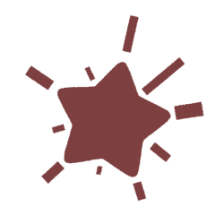

Resumen
Estudiante apasionada por la ciberseguridad, el desarrollo web y el desarrollo de videojuegos. Con experiencia práctica en frameworks como Next.js y React, y sólidos conocimientos en administración de redes. Enfocada en crear soluciones tecnológicas seguras y escalables con impacto social.
Estudios
Ingeniería de Software
Universidad Autónoma de Yucatán | Graduación esperada: 2026
Experiencia Laboral
Prácticas profesionales
Sunum Lakin | Septiembre 2025 - Diciembre 2025
- Desarrollo web fullstack y aseguramiento de la calidad de software.
- Next.js, React, Express, Javascript, JSX, HTML, CSS.
Proyectos y actividades
Hablando con las manos
Aplicación web para la enseñanza de Lengua de Señas Mexicana (LSM) inspirada en el diseño interactivo de Duolingo. Este proyecto me ayudó a profundizar mis conocimientos en desarrollo front-end y back-end, así como diseño responsivo y manejo de bases de datos.
NextJs React TypeScript ScssTaller de introducción a React
Impartí un taller de 16 horas totales, divididas en sesiones de 2 horas en el plazo de varias semanas, enfocado a la introducción de conceptos básicos de React y su aplicación dentro de desarrollo web. Esta experiencia me ayudó a fomentar mis propias bases sobre esta tecnología, y enseñé conceptos básicos sobre su funcionamiento a profesores de mi facultad.